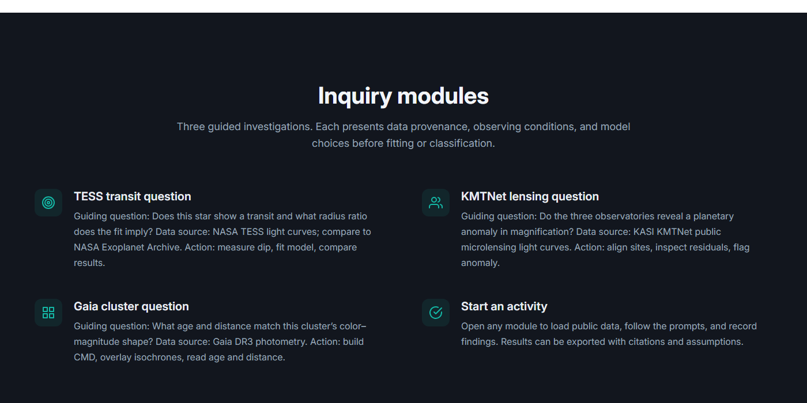

수치는 논문 §4.7.1 표 4-15 의 WASP-121 b 실측값. 모든 열이 같은 자료다.
2판 정정. 1판은 토큰 세 개(모서리·흐린 글자색·강조색)만 바꿔 놓고 «zoviz 이식»이라고 했다. 실제로 그 시안을 그렇게 보이게 만드는 것은 여백과 글자 위계, 그리고 상자를 쓰지 않는 것이며 1판은 그중 어느 것도 가져오지 않았다. 규약이 요구하는 레퍼런스 열도 빠져 있었다. 둘 다 넣었다.

#12161e — 패널·카드·입력마다 다른 어두운 색을 쓰지 않는다.측정값이 기준값과 다르면 비교성 품질, blending, aperture, ROI, noise, 모델 가정을 근거로 설명한다.
주기는 측정한 값이 아니라 NASA Exoplanet Archive에서 가져온 값입니다. 단일 관측에는 식이 한 번뿐이라 주기를 직접 구할 수 없습니다.
A안 · 틸zoviz 아이콘색
WASP-121 b · NASA Exoplanet Archive · TESS 섹터 33
기준값은 아카이브의 식 깊이에서 √(식 깊이)로 되짚은 값이다. 논문이 직접 싣는 값과는 원래 조금 다르다.
| 항목 | 내 측정 | 문헌값 | 차이 |
|---|---|---|---|
| 식 깊이 | 1.2000 | 1.5510 | −0.3510%p (−22.6%) |
| 반지름비 | 0.1100 | 0.1249 | −0.0149 (−11.9%) |
| 공전 주기 | — | 1.27493 d | 측정 아님 · 아카이브 입력값 |
−11.9% 라는 값만으로는 크기를 알 수 없다. 내 적합 불확도로 나눠 본다.
반지름비 차이 0.0149 는 내 적합 불확도 ±0.002 의 약 7배다.
자료가 흔들려 생긴 우연으로 보기는 어렵다. 적합 잔차 χ²_red 는 0.98 로 모델 자체는 자료를 잘 설명한다.
지금은 «비교성·블렌딩·구경·ROI 를 보라»는 문장만 있다. 그 값들을 여기로 가져온다. 무엇이 차이를 만들었는지는 직접 판단한다.
위 설정 가운데 무엇이 어떤 방향으로 영향을 주었을지, 근거를 들어 설명한다.
제출한 뒤에 열림덧붙임 ③ — 지금은 «비교성·블렌딩·구경이 흔한 원인»이라는 안내가 쓰기 전에 먼저 보인다. 제출 뒤로 미루면 답을 보고 고르는 경로가 사라진다.
B안 · 청zoviz 배지·점 색
WASP-121 b · NASA Exoplanet Archive · TESS 섹터 33
기준값은 아카이브의 식 깊이에서 √(식 깊이)로 되짚은 값이다. 논문이 직접 싣는 값과는 원래 조금 다르다.
| 항목 | 내 측정 | 문헌값 | 차이 |
|---|---|---|---|
| 식 깊이 | 1.2000 | 1.5510 | −0.3510%p (−22.6%) |
| 반지름비 | 0.1100 | 0.1249 | −0.0149 (−11.9%) |
| 공전 주기 | — | 1.27493 d | 측정 아님 · 아카이브 입력값 |
−11.9% 라는 값만으로는 크기를 알 수 없다. 내 적합 불확도로 나눠 본다.
반지름비 차이 0.0149 는 내 적합 불확도 ±0.002 의 약 7배다.
자료가 흔들려 생긴 우연으로 보기는 어렵다. 적합 잔차 χ²_red 는 0.98 로 모델 자체는 자료를 잘 설명한다.
지금은 «비교성·블렌딩·구경·ROI 를 보라»는 문장만 있다. 그 값들을 여기로 가져온다. 무엇이 차이를 만들었는지는 직접 판단한다.
위 설정 가운데 무엇이 어떤 방향으로 영향을 주었을지, 근거를 들어 설명한다.
제출한 뒤에 열림덧붙임 ③ — 지금은 «비교성·블렌딩·구경이 흔한 원인»이라는 안내가 쓰기 전에 먼저 보인다. 제출 뒤로 미루면 답을 보고 고르는 경로가 사라진다.